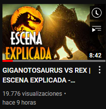
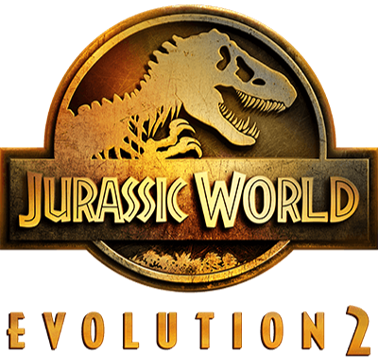
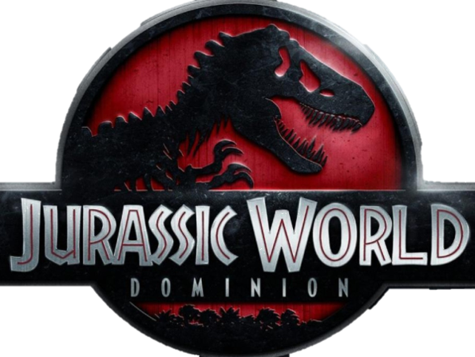
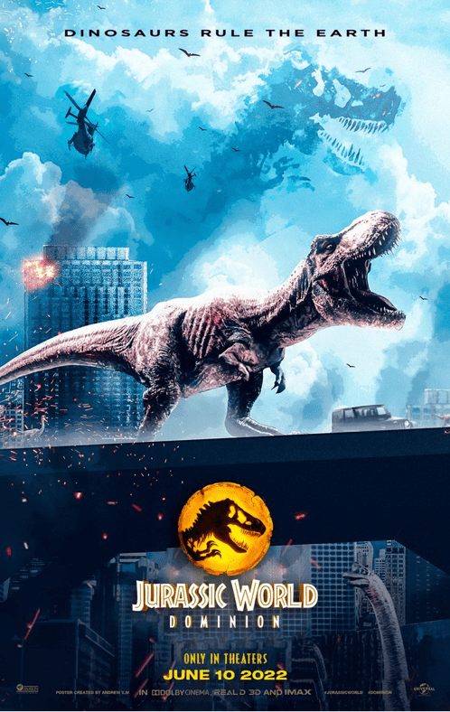
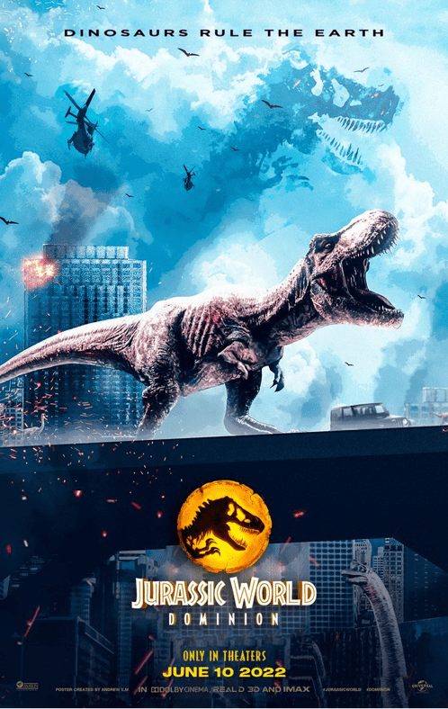

El verdadero Origen de este Mundo
Michael Crichton comenzó a redactar un guion cinematográfico que narraba la historia de un estudiante interesado en la clonación de dinosaurios, una idea que luego desembocó en la escritura de la novela Parque Jurásico.12 Antes de su publicación, fijó el precio por sus derechos en 1,5 millones USD en adición a un sustancial porcentaje de las ganancias que las posibles adaptaciones de la misma tuvieran. A su lanzamiento, Warner Bros. y Tim Burton, Columbia Pictures y Richard Donner, así como 20th Century Fox y Joe Dante intentaron adquirir los derechos de la misma, sin embargo Universal Pictures y Steven Spielberg los obtuvieron en mayo de 1990.
Nov-2021
Retorna el Spinosaurio al Parque
hola a todos mis queridos paleontólogos sean bienvenidos a un nuevo vídeo de jurassic world cup crisis y es que por fin se ha revelado nada más y nada menos que el esperado primer tráiler de la temporada 4 de la serie de animación de réflex y no importaran y la verdad para mi sorpresa este tráiler ha sido mucho más extraño de lo que esperaba en un principio ya que tenemos elementos cuanto menos peculiares si nos situamos en la saga de 'jurassic park' y otros momentos son espectaculares y otros tantos nostálgicos pero sin duda la cuarta temporada apunta a ser la más ambiciosa de la serie hasta ahora y no me sorprendería que elementos de esta temporada sean tomados
Nov-2021
Jurassic World Evolution 2
El Juego que Cambio el Roleplay de la Saga
Jurassic World Evolution 2 es la esperada secuela del juego Jurassic World Evolution, el éxito de Frontier de 2018, y desarrolla aún más la innovadora simulación de gestión de la primera entrega. Cuenta con una nueva y emocionante campaña narrativa, características novedosas y dinosaurios increíbles que cobran vida con un realismo inigualable. Gracias a un mayor número de opciones de construcción y personalización, el resultado es un juego de Jurassic World más grande y más auténtico que nunca.
Nov-2021
Jurassic World Dominion
Colin Trevorrow ha anunciado que ha finalizado su trabajo en Jurassic World: Dominion después de un largo proceso de producción. La tercera y probablemente última entrega de la saga Jurassic World tendría que haberse estrenado en verano de este mismo año, pero la pandemia de coronavirus retrasó indefinidamente su proyección en cines. No obstante, Jurassic World 3 comenzó a rodarse a comienzos de 2020, presentándonos una filmación atribulada, múltiples desafíos y cambios de calendario por doquier. Trevorrow, que inició esta trilogía en 2015, verá su obra concluida en junio de 2022.
 
